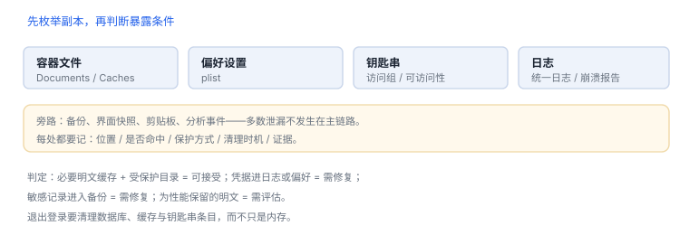

数据流与存储评估
先画清数据落到哪里，再谈“有没有加密”
数据评估的常见错误是先看加密算法，再看数据在哪。顺序反过来更有效：先枚举副本，再判断每份副本的暴露条件，最后才选保护手段。
1. 实验准备
- 全新安装样例应用，登录测试账号，制造一条可识别的测试记录（例如
TEST-RECORD-001）。 - 准备查看容器内容的开发环境：模拟器可直接访问容器目录；真机通过调试构建导出或使用受控的日志手段。
- 准备一份检查表，逐项记录“位置 / 是否命中 / 保护方式 / 证据”。
2. 检查任务
| 位置 | 怎么查 | 关注点 |
|---|---|---|
| 容器文件 | 搜索测试记录标识 | 是否明文、是否在不该存在的目录 |
| 偏好设置 | 检查 plist 内容 | 是否存了令牌或身份信息 |
| 钥匙串 | 通过调试构建读取条目属性 | 可访问性、访问组、是否仅本设备 |
| 日志 | 导出系统日志并搜索标识 | 是否出现完整记录或令牌 |
| 备份 | 检查备份内容（自有设备） | 敏感文件是否参与备份 |
| 界面快照 | 切换后台后查看切换器 | 敏感信息是否可见 |

3. 判定标准
- 可接受：必要的明文缓存，位于受保护目录，有清理策略，且不含凭据。
- 需修复：凭据出现在日志或偏好设置；敏感记录进入备份；快照暴露内容。
- 需评估：为了性能保留的明文缓存，需有加密或访问控制补偿。
4. 常见发现
- 调试日志把整个响应体打印出来，包含他人信息。
- 退出登录只清了内存，磁盘缓存仍在。
- “仅本设备”语义缺失，凭据随备份迁移到新设备。
- 图片缓存没有淘汰策略，长期占用空间。
5. 交付物：位置表与证据清单
- 一份位置清单：每处数据、保护方式、清理时机。
- 证据：文件名与时间戳（脱敏），不粘贴完整敏感内容。
- 修复建议：按“最小改动、可回归”排序。
6. 判定标准
| 发现 | 结论 | 动作 |
|---|---|---|
| 凭据出现在日志/偏好设置 | 需修复 | 改存钥匙串、清理日志 |
| 明文缓存位于受保护目录 | 可接受 | 补清理策略 |
| 敏感文件参与备份 | 需修复 | 排除备份或改保护类 |
检索容器中的测试标识
APP=$(xcrun simctl get_app_container booted com.example.app data)
grep -rl "TEST-RECORD-001" "$APP" | head
du -sh "$APP"/Library/Caches先枚举副本
先列“数据出现在哪些位置”，再判断每份副本的暴露条件，最后才选加密手段；顺序反了会漏掉日志与备份。
先列“数据出现在哪些位置”，再判断每份副本的暴露条件，最后才选加密手段；顺序反了会漏掉日志与备份。
7. 常见错误：存储评估
| 错误 | 为什么错 |
|---|---|
| 只查 Documents | 偏好设置与缓存同样可能落敏感数据 |
| 把缓存增长当泄漏 | 缓存有上限问题，不是对象泄漏 |
| 只看文件不看备份 | 排除备份缺失会让数据进入云端 |
| 清理只清内存 | 退出登录后磁盘仍留有副本 |
8. 自测
- 为什么先枚举副本再看加密？
- “退出登录后磁盘仍有缓存”属于哪一类问题？
- 证据记录中为什么不应粘贴完整敏感内容？